| MASS | ggplot2 |
|---|---|
| 7.3.65 | 4.0.2 |
34 Robust Regression: Resistant Lines and Beyond
Ordinary least squares regression lines (those created using the lm() function) are known to be highly sensitive to outliers. This sensitivity arises because OLS regression minimizes the sum of squared residuals, which gives disproportionate weight to data points with large deviations from the predicted line. Consequently, even a single outlier can significantly distort the slope and intercept of the best-fit line.
This vulnerability is tied to the use of the mean, a central measure that is not robust to outliers. Specifically, the breakdown point of OLS regression is \(1/n\), meaning that the presence of just one outlier in a dataset with \(n\) points can greatly influence the regression results.
To illustrate this, consider a simple dataset where all points are perfectly aligned along a line.
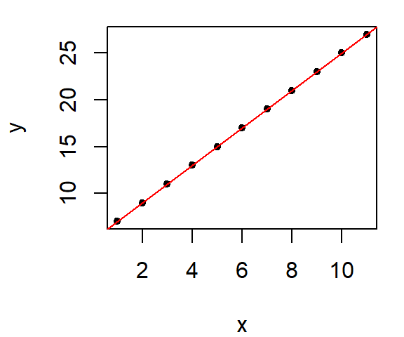
By fitting this dataset with an OLS regression line we have a perfect fit, as expected.
Next, we introduce an outlier. Note what happens to the OLS fitted line when a single point deviates significantly from the linear pattern.
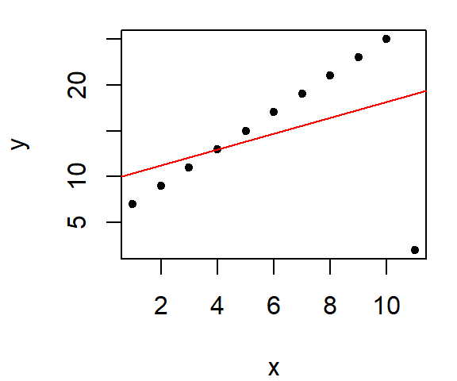
When our goal is to understand the trend of the data and what the bulk of the data reveal about the phenomenon under investigation, we cannot afford to let a few “extreme” values dominate the analysis. Outliers, while sometimes interesting, can distort results in ways that obscure the broader patterns. To address this, we need fitting tools that reduce or eliminate the undue influence of such outliers.
Fortunately, several methods are available for this purpose. Among them, Tukey’s resistant line and the bisquare robust estimation are alternatives to traditional regression techniques. These methods will be explored here to demonstrate their effectiveness in focusing on the “bulk” of the data while handling outliers gracefully.
34.1 Robust lines
34.1.1 Robust regression using Tukey’s resistant line
The idea is simple in concept. It involves dividing the dataset into three approximately equal groups of values and summarizing these groups by computing their respective medians. The median values of each batch are then used to compute the slope and intercept. The motivation behind this plot is to use the three-point summary to provide a robust assessment of the type of relationship between both variables.
Let’s look at an example of its implementation. We’ll continue with the example used in the previous section. First, we divide the plot into three approximately equal batches delineated by vertical dashed lines in the following plot.
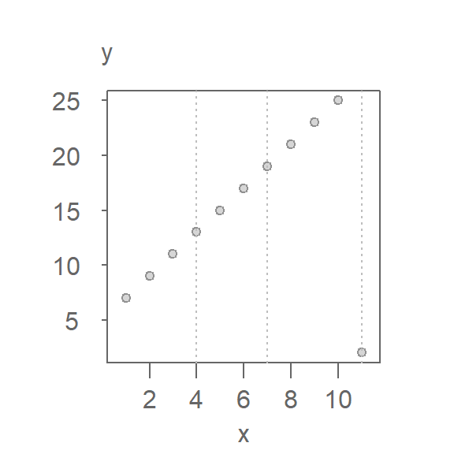
Next, we compute the median x and y values for each batch. The medians are presented as red points in the following plot.
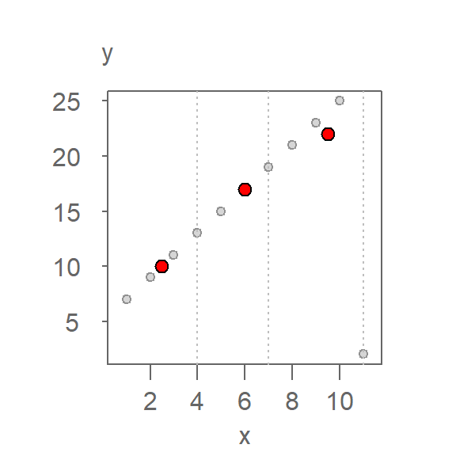
The \(X\) median values are 2.5, 6, 9.5 and the \(Y\) median values are 10, 17, 22 respectively.
The two end medians are used to compute the slope as:
\[ b = \frac{y_r - y_l}{x_r-x_l} \] where the subscripts \(r\) and \(l\) reference the median values for the right-most and left-most batches.
Once the slope is computed, the intercept can be computed as follows:
\[ median(y_{l,m,r} - b * x_{l,m,r}) \]
where \((x,y)_{l,m,r}\) are the median \(X\) and \(Y\) values for each batch.
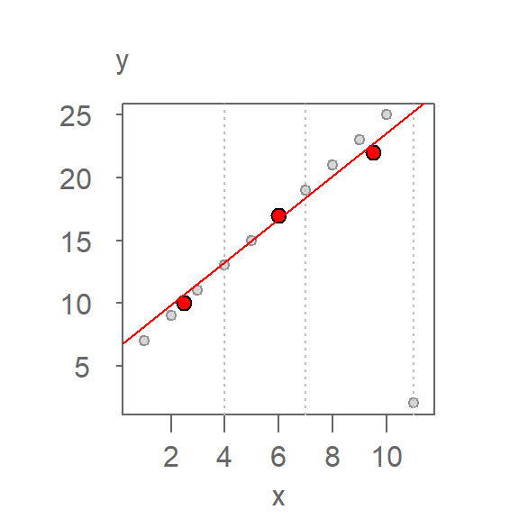
This provides a reasonable first approximation. But the outlier’s influence is still present given that the line is not passing through all nine points. Recall that the goal is to prevent a lone observation from influencing a fitted line.
From this first iteration, we can extract the residuals. A line is then fitted to the residuals following the same procedure outlined above.
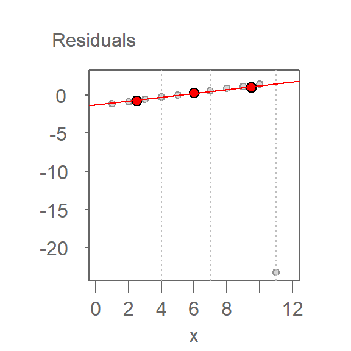
The initial model intercept and slope are 6.429 and 1.714 respectively and the residual’s slope and intercept are -1.224 and 0.245 respectively. The residual slope is added to the first computed slope giving us an updated slope of 1.959 and the process is again repeated thus generating the following tweaked slope and updated residuals:
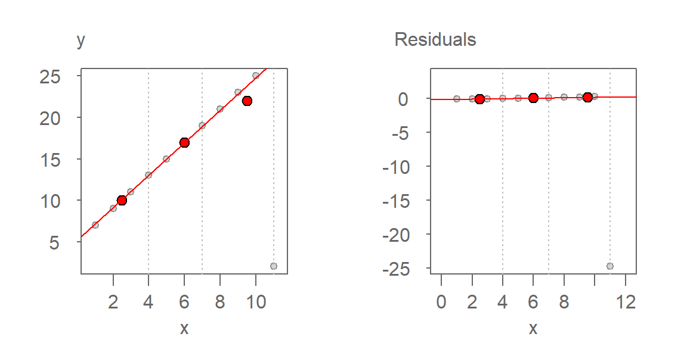
The second set of residuals is added to the previously computed slope giving us an updated slope of 1.994. The iteration continues until the fitted line’s residuals stabilize. Each successive iteration is shown in the following plot with the final line in dark red.
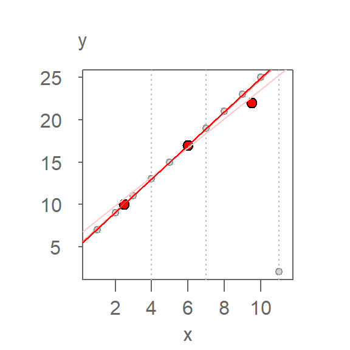
Each iteration refines the slope by fitting a resistant line to the residuals of the previous fit. This process continues until the residuals stabilize, yielding a final line that is minimally influenced by outliers.
Three iterations were required to stabilize the residuals, giving us the final fitted line whose intercept and slope are 5.03 and 1.99 respectively–very close to the actual relationship between the two variables.
34.1.1.1 R implementation of Tukey’s resistant line
Tukey’s resistant line can be computed using the R built-in line() function. The maximum number of iterations is set with the iter argument. Usually, five iterations will be enough.
r.fit <- line(x,y, iter = 5)You can add the resistant line to a base plot as follows:
plot(y ~ x, df)
abline(r.fit, col = "red")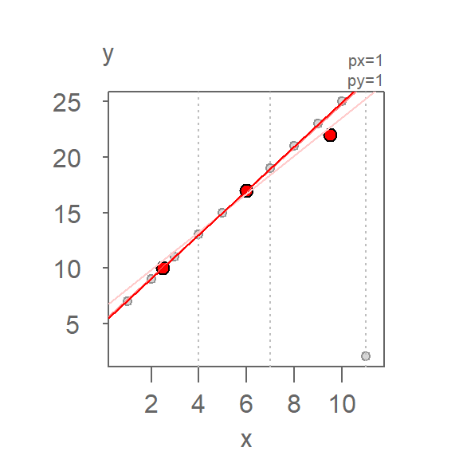
You can also add the resistant line to a ggplot using the geom_abline() function:
library(ggplot2)
ggplot(df, aes(x,y)) + geom_point() +
geom_abline(intercept = r.fit$coefficients[1],
slope = r.fit$coefficients[2],
col = "red")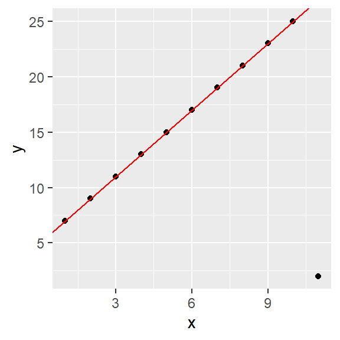
34.1.2 Robust regression using bisquare weights
The bisquare fitting strategy employs a robust regression technique that assigns weights to observations based on their residuals. Observations closer to the fitted model are given higher weights, while those farther away receive progressively smaller weights, reducing their influence on the model.
The process begins with an initial linear regression model fitted to the data. Residuals from this model are then computed, and a weighting scheme is applied: observations with smaller residuals are assigned larger weights, while those with larger residuals (indicating potential outliers) are assigned smaller weights. A new regression is then performed using these weights, effectively minimizing the influence of outliers on the fitted line.
This iterative process is repeated, with weights recalculated after each regression, until the residuals stabilize and no further significant changes are observed. The figure below illustrates three iterations of the bisquare function, showing how weights (displayed as grey text next to each point) evolve. Initially, all weights are set to 1, but they are progressively adjusted in response to the residuals derived from the most recent regression model.

34.1.2.1 Computing bisquare weights from residuals
Robust regression methods reduce the influence of outliers by assigning weights to observations based on the size of their residuals. One commonly used weighting scheme is the bisquare weight function, which smoothly downweights large residuals and completely excludes extreme ones.
The bisquare weight for a residual \(u\) is defined as:
\[ w(u) = \begin{cases} \left(1 - \left(\frac{u}{c}\right)^2\right)^2 & \text{if } |u| < c \\\\ 0 & \text{otherwise} \end{cases} \] Here:
- \(u\) is the residual (often standardized);
- \(c\) is a tuning constant (commonly set to 6). Smaller values of \(c\) increase robustness by downweighting more observations, but may reduce efficiency when the data are approximately Normal. Larger values of \(c\) approach the behavior of OLS.
- \(w(u)\) is the weight assigned to the observation.
This function gives:
- High weights to residuals near 0,
- Low weights to residuals near \(\pm{c}\)
- Zero weight to residuals beyond, effectively removing them from the fit.
34.1.2.2 Bisquare weights and M-estimators
The bisquare fitting procedure used in robust regression is a specific example of an M-estimator. M-estimators generalize maximum likelihood estimation by minimizing a function of the residuals rather than the sum of squared residuals (as in ordinary least squares).
In the case of bisquare regression, we minimize a weighted sum of squared residuals, where the weights are determined by the bisquare function
34.1.2.3 R implementation of the bisquare
The MASS package has a robust linear modeling function,rlm, that utilizes M-estimators including the bisquare technique described in this chapter. To implement the bisquare technique set the function’s psi argument to "psi.bisquare". The following code chunk implements the bisquare fitting technique. It also adds the OLS fitted model as a dashed line to the plot.
Note that if you make use of
dplyrin an R session, loadingMASSafterdplyrwill mask dplyr’sselectfunction. This can be problematic. You either want to loadMASSbeforedplyr, or you can call the function viaMASS::rlm. The latter option is adopted in the following code chunk.
dat <- data.frame(x,y)
M <- lm( y ~ x, dat=dat)
Mr <- MASS::rlm( y ~ x, dat=dat, psi="psi.bisquare")
plot(y ~ x,dat, pch=16, col=rgb(0,0,0,0.2))
# Add the robust line
abline( Mr, col="red")
# Add the OLS regression line for reference
abline( M , col="grey50", lty=2)
The function rlm can also be called directly from within ggplot.
library(ggplot2)
ggplot(dat, aes(x=x, y=y)) + geom_point() +
stat_smooth(method = MASS::rlm, se = FALSE, col = "red",
method.args = list(psi = "psi.bisquare"))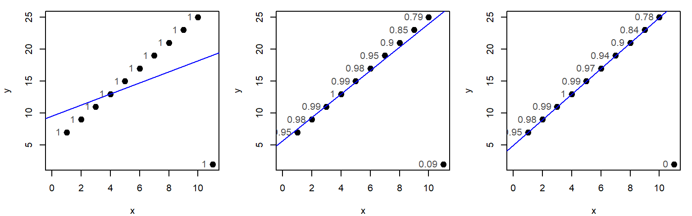
34.2 Robust loess
Like linear regression, loess smoothing can also be sensitive to outliers. The bisquare estimation method can be implemented in the loess smoothing function by passing the "symmetric" option to the family argument.
# Fit a regular loess model
lo <- loess(y ~ x, dat)
# Fit a robust loess model
lor <- loess(y ~ x, dat, family = "symmetric")
# Plot the data
plot(y ~ x, dat, pch = 16, col = rgb(0,0,0,0.2))
# Add the default loess
lines(dat$x, predict(lo), col = "grey50", lty = 2)
# Add the robust loess
lines(dat$x, predict(lor), col = "red")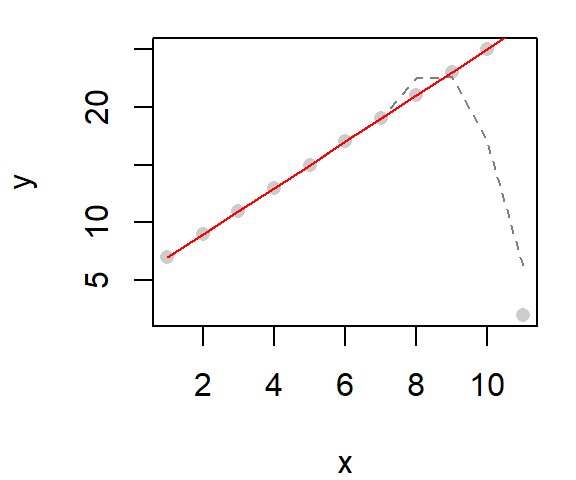
The robust loess is in red, the default loess fit is added as a dashed line for reference.
The robust loess can be implemented in ggplot2’s stat_smooth function as follows:
library(ggplot2)
ggplot(dat, aes(x=x, y=y)) + geom_point() +
stat_smooth(method = "loess",
method.args = list(family="symmetric"),
se=FALSE, col="red") 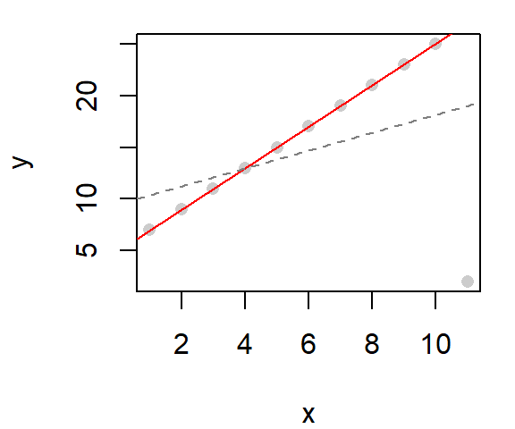
The loess parameters are passed to the loess function via the method.args argument.
34.3 When to use robust fitting techniques
Use robust regression when:
- You suspect outliers or influential points,
- The residuals from OLS show non-constant variance or non-normality,
- You want a model that reflects the central trend of the data.
34.4 Summary
This chapter introduced robust regression techniques that mitigate the influence of outliers. Tukey’s resistant line provides a simple, iterative approach based on medians, while bisquare regression uses a smooth weighting function to downweight extreme residuals. Both methods offer more reliable estimates when the data contain anomalies. Robust loess extends these ideas to nonlinear smoothing. Together, these tools help analysts focus on the central trend of the data without being misled by a few extreme values.